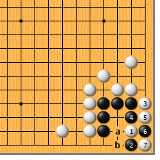
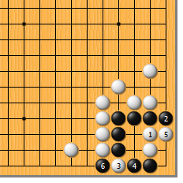
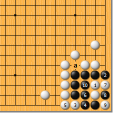
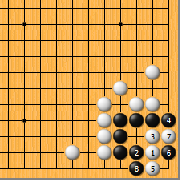
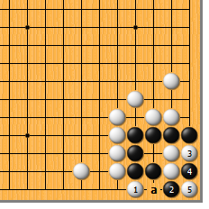
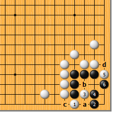
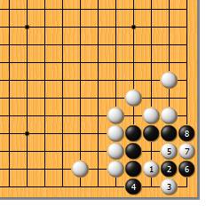

|  |  | |
| 图1 在松一气的场合，白1点只此一手。黑2托仍为手筋，以下至白7成劫，这和第10型相同。白3如a位顶，黑b位应，结果不变。
| 图2 气松时，白1顶不好。黑2立，白3扳时，黑4顶成急所，这一点和气紧时不同！白5只得挡，黑6提成万年劫，黑有利。 | |
|  |  | |
图3 前图白5如改走本图5位粘，黑6也粘。白7再挡时，黑8至10可吃胀牯牛而活。如a位气紧，则只好打劫，明白了吧。 | 图4 白1时，黑2拐通常时俗手，此时却因为气松而成立。白3黑4后，白5立不成立。黑6手筋，至黑8，黑快一气胜。
| |
|  |  | |
图5 前图白5应走本图1位扳，这样黑2也只好扳，而后白3黑4成劫。此图也为正解。黑2如a位挡，白3位拐黑死。（小心哦） | 图6 白1扳在气松时不成立。黑2还是一样的应法，白3扳时，黑4夹冷静，白5扳则黑6挡，没有问题。而后，白a黑b、白c黑d，黑活。
| |
|  | 您的高见 | |
图7 白1夹也不行，黑2反夹，白难受。白3如扳，黑4立强硬！白5打，黑6立，白7再打，黑8就挡。由于有三口外气，黑可以不慌不忙地将白棋提掉。白3如4位渡，黑3位立，回到前图。 |